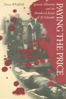

<body bgcolor="#FFFFFF" text="#000000" link="#0000FF" vlink="#CC0000" alink="#CC0000"><center><hr width="350" size="1" align="center" noshade>An investigation of one of the most tragic and divisive events in Latin American history<hr width="350" size="1" align="center" noshade><p><a href="https://cdcshoppingcart.uchicago.edu/Cart/ChicagoBook.aspx?ISBN=9781566392525&&PRESS=temple" target="_top">Buy this book!</a> | <a href="https://cdcshoppingcart.uchicago.edu/Cart/Cart.aspx?PRESS=temple" target="_top">View Cart</a> | <a href="https://cdcshoppingcart.uchicago.edu/Cart/Cart.aspx?PRESS=temple" target="_top">Check Out</a></p><p></p></center><!--none//--><h1>Paying the Price</h1>
<H2>Ignacio Ellacur�a and the Murdered Jesuits of El Salvador</H2>
<H2><!-- Foreword by Soto, de Alvaro --></H2>
<h3>Teresa Whitfield, foreword by Alvaro de Soto</h3>
<P>cloth 1-56639-252-7 $79.50, Nov 94, <FONT COLOR=#990033>Out of Stock Unavailable</FONT>
<br>paper 1-56639-253-5 $38.95, Nov 94, <FONT COLOR=#990033>Available</FONT>
<BR> 528 pp
6x9
2&nbsp;figures 12&nbsp;halftones
</P><BLOCKQUOTE><I>"This is a brilliant and authoritative telling of one of our time's compelling dramas, the interplay of religion and politics in El Salvador over the last decades-sophisticated, complex and an absolute page-turner."</I>
<br>&#151<b>Tom Quigley</b>, United Stated Catholic Conference<I></I></BLOCKQUOTE>
<p>On November 16, 1989, on the campus of El Salvador's University of Central America, six Jesuits and two women were murdered by members of the Salvadoran army, an army funded and trained by the United States. One of the murdered Jesuits was Ignacio Ellacur�a, the university's Rector and a key, although controversial, figure in Salvadoran public life. From an opening account of this terrible crime, <I>Paying the Price</I> asks, Why were they killed and what have their deaths meant? Answers come through Teresa Whitfield's detailed examination of Ellacur�a's life and work. His story is told in juxtaposition with the crucial role played by the unraveling investigation of the Jesuits' murders within El Salvador's peace process.
<p>A complex and nuanced book, <I>Paying the Price</I> offers a history of the Church in El Salvador in recent decades, an analysis of Ellacur�a's philosophy and theology, an introduction to liberation theology, and an account of the critical importance of the University of Central America. In the end, Whitfield's comprehensive picture of conditions in El Salvador suggest that the Jesuits' murders were almost inevitable. A crime that proved a turning point in El Salvador's civil war, the murders expressed the deep tragedy of the Salvadoran people beyond suffering the heartless cruelty, violence, and deceitfulness of a corrupt military and their patrons in the U.S. government.
<p>Whitfield draws on her extensive research of Jesuit archives and private papers, Ellacur�a's diaries, documents declassified by the U.S. government, and 200 interviews conducted with sources ranging from Jesuits to Salvadoran military officers, U.S. officials and congressmen to human rights campaigners.
<BR>&nbsp;<h2>Excerpt</h2><P>Excerpt available at <a href="http://www.temple.edu/tempress">www.temple.edu/tempress</a></p>
<BR>&nbsp;<h2>Reviews</h2>
<p><I>"More than an account of the most horrifying events in the litany of human rights violations in the history of El Salvador, this book is an acute analysis of the political and military context in which it happened. Few books about El Salvador have dug as deep into the entrails of the Salvadoran reality, nor reflected as much access to major actors on all sides. Whitfield does not accept facile explanations, nor present the Jesuits as unidimensional. What she does do is demonstrate the impact of a few individuals who spoke out for justice in the face of massive inequalities and repeated threats. Ultimately their deaths contributed to an end to war in El Salvador and reinvigorated the struggle for basic human rights they held so dear."</I>
<br>&#151<b>Margaret E. Crahan</b>, Henry R. Luce Professor of Religion, Power and the Political Process, Occidental College
<p><I>"This eloquent, masterful book evokes the causes and consequences of the heartless murders of six Jesuit priests and two women in El Salvador. I know of no other work which so richly or perceptively combines recent political history, theology, and biography to explain who the Jesuits were and why the armed forces set out coolly to eliminate them. The portrait of U.S. policy as it sought to protect the military is as riveting as it is disturbing."</I>
<br>&#151<b>Cynthia J. Arnson</b>, Associate Director, Human Rights Watch/Americas
<p><i>"The book is a hybrid of biography and ecclesiastical and political history.... written almost like a novel..."</i>
<br>&#151<b><i>The Hispanic American Historical Review</i></b>
<BR>&nbsp;<h2>Contents</h2><P>
<p>List of Illustrations
<br>Foreword &#150 Alvaro de Soto
<br>Preface
<br>Acknowledgments
<br>Introduction: One Night in November
<br>1. Early Days in a New World
<br>2. Choosing for the Poor
<br>3. How Much More Does It Take?
<br>4. With an Exemplary Archbishop in the Nation's Crisis
<br>5. In the Kingdom of Terror and Lies
<br>6. Congress Comes to Town
<br>7. A Utopian Rector
<br>8. The UCA in a Time of War
<br>9. What's Done Here...Stays Here
<br>10. Dialogue Was a Crime
<br>11. Never So Close, Never So Far
<br>12. Dead with Spirit
<br>Afterword: April 1994
<br>Chronology
<br>Acronyms
<br>Notes
<br>Index
</P><BR>&nbsp;<H2>About the Author(s)</H2>
<P><b>Teresa Whitfield</b> spent several years in El Salvador and the United States researching the murders and has also produced a television documentary of the incident, broadcast in more than eight countries. She is currently a freelance writer and television producer based in London.</P>
<BR><H2>Subject Categories</H2>
<p><A HREF="/tempress/latin.html" TARGET="_top">Latin American/Caribbean Studies</a>
<BR><A HREF="/tempress/sociology.html" TARGET="_top">Sociology</a>
</p>
<p align="center"><a href="https://cdcshoppingcart.uchicago.edu/Cart/ChicagoBook.aspx?ISBN=9781566392525&&PRESS=temple" target="_top">Buy this book!</a> | <a href="https://cdcshoppingcart.uchicago.edu/Cart/Cart.aspx?PRESS=temple" target="_top">View Cart</a> | <a href="https://cdcshoppingcart.uchicago.edu/Cart/Cart.aspx?PRESS=temple" target="_top">Check Out</a></p><p><font face="Arial" size="1"><a href="copyright.html" onMouseOver="window.status='Web Copyright Policy';return true;" onMouseOut="window.status=''" title="Web Copyright Policy">&copy;</a> 2015 <a href="http://www.temple.edu" target="new" onMouseOver="window.status='Link to Temple University home page';return true;" onMouseOut="window.status=''" title="Link to Temple University home page">Temple University</a>. All Rights Reserved. http://www.temple.edu/tempress/titles/1139_reg.html</font></p>